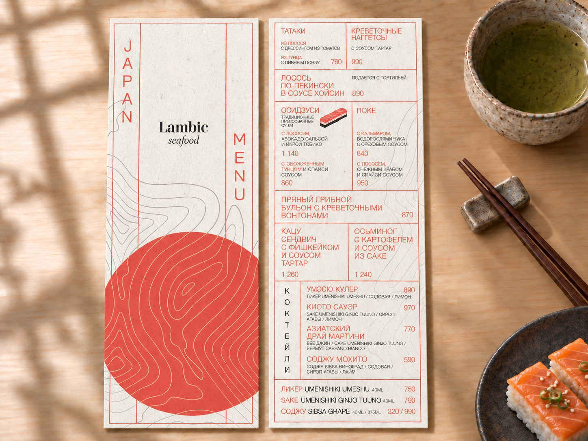
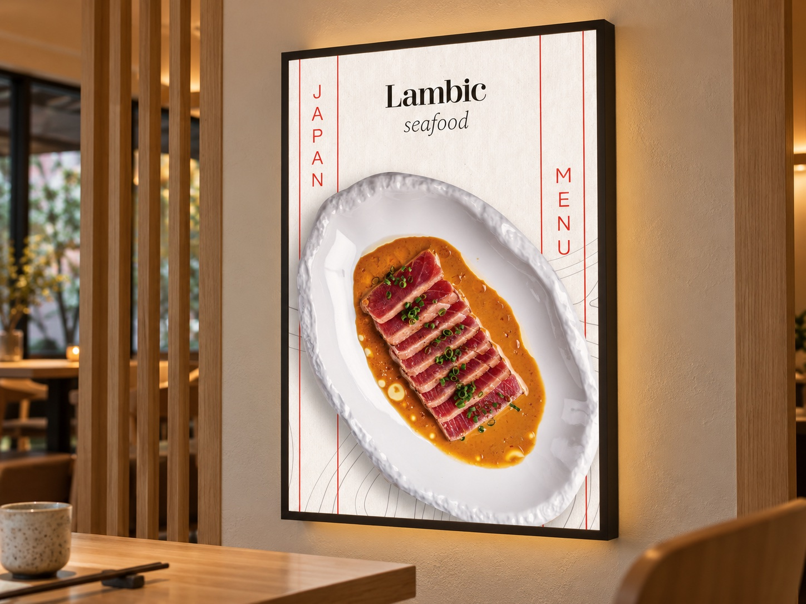
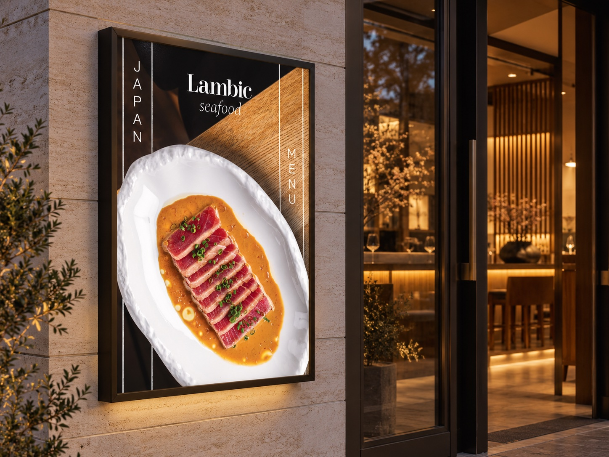

Lambic
Сезонное японское меню
Сезонное японское меню для Lambic — дизайн двустороннего меню и двух лайтбоксов. Приглушённый коралловый, фактура бумаги и тонкие линии от руки создают спокойное настроение, а фотографии блюд на лайтбоксах знакомят гостей с тематическим предложением.



